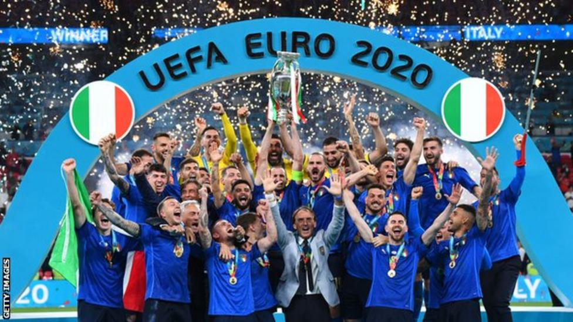
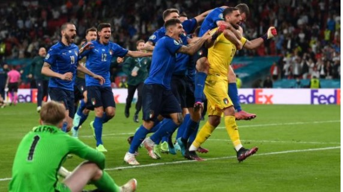
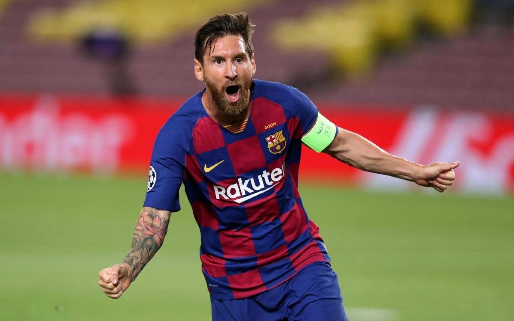
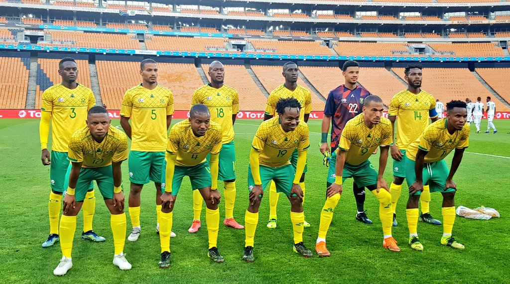
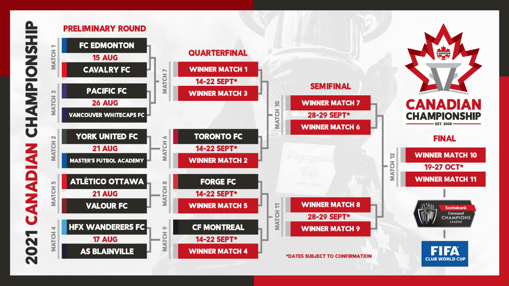
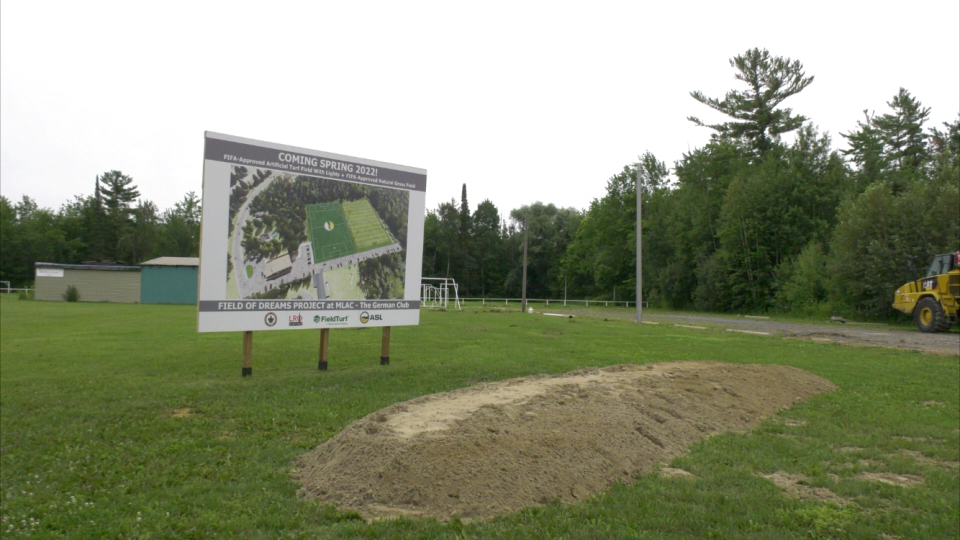
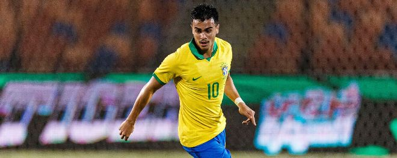
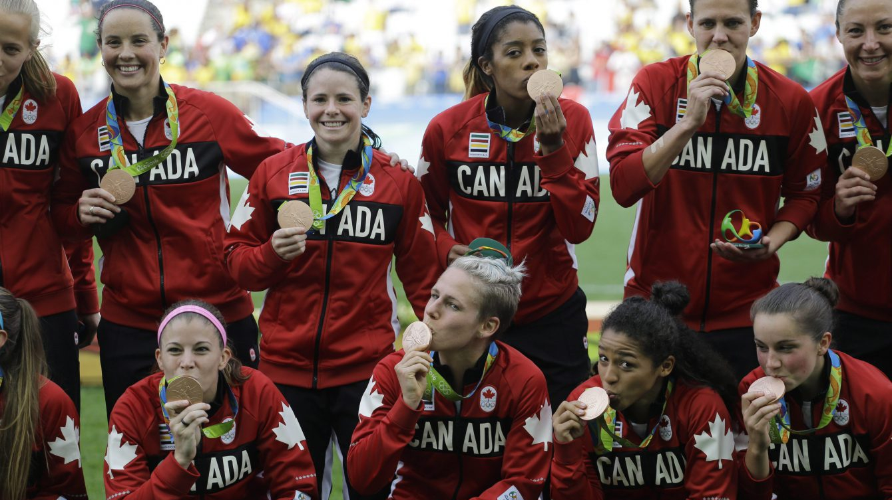
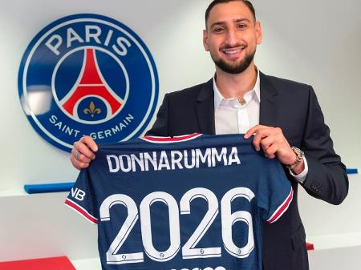
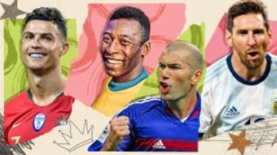

Soccer news
Euro 2020: 'Out of despair, Italy have brought joy to a nation'
The image of a crying Gianluigi Buffon filled the pages of nearly every newspaper in Italy.
On 13 November 2017, the country shaped like a football boot could not score a goal against Sweden to qualify for the World Cup.
It was more than a national tragedy - it was labelled as the apocalypse. On the cover of Italy's famous pink paper, Gazzetta dello Sport, the headline simply read: "The end."
There was no rhythm to Italy's game, only a bunch of individuals doing all they could to avoid the shame of not qualifying. The public hated the team and their football association, but they particularly hated the coach.
As another paper, La Repubblica, noted, "the apocalypse bore a blue hue" - the colour of the Azzurri - for Italy were unable to find one "miserable goal" against "a poor Sweden, embarrassing on a technical level yet proud in its resistance".
Questions were asked about how such a proud footballing nation could fall so far. Who could resuscitate this blue beast? Carlo Ancelotti was the man everyone wanted. Roberto Mancini was who they got.
England lose shootout in EURO 2020 Final
England's bid to end their 55-year wait for a major trophy ended in the familiar agony of defeat in a penalty shootout as Italy claimed the Euro 2020 crown at Wembley.
Messi, Barcelona agree new deal - sources
Lionel Messi and Barcelona have reached an agreement for the forward to sign a five-year deal with the Catalan club, sources have confirmed to ESPN.
South African soccer team outbreak tests Tokyo Olympics’ ‘covid-safe’ strategy
An outbreak of infections among members of the South Africa men’s soccer team emerged as the first test of Olympic officials’ strategy of aggressive testing and swift isolation to prevent the spread of the coronavirus during the Tokyo Games.
2021 Canadian Championship format and schedule announced
Canada Soccer has announced both the schedule and format for the 2021 Canadian Championship, which will see 13 participants in a single knock-out competition culminating in the Final in October 2021.
2.5 million field of dreams soccer facility planned for Carlsbad Springs
For Ron Palaczka, there’s a lot of personal history at the Maple Leaf Almrausch German Club in Ottawa. He played youth soccer on this field. That led to the field of dreams project. A $2.5 million investment to build a state-of-the-art soccer facility in Carlsbad Springs. And we’re told it is set to become the second-largest turf field in the city.
Men's U23 Olympic stars to watch include
Reinier, Amad Diallo and Marc Cucurella

In the past, stars such as Argentina's Lionel Messi (2008), Mexico's Raul Jimenez (2012) and Brazil's Neymar (2016) have walked away with the gold medal, but the pandemic has limited the number of top players that clubs are willing to let go this summer. And there will be no fans.
The Olympic tournament is not recognised as part of the official FIFA calendar so generally domestic clubs in Europe aren't obligated to release their players. But Spain's law says that those playing in La Liga must be allowed, which may explain the strength of their squad with six members of their Euro 2020 side included: Pedri, Eric Garcia, Dani Olmo, Unai Simon, Mikel Oyarzabal and Pau Torres.
Canadian women's soccer targets 3rd consecutive Olympic medal at Tokyo Games
Can Canada's women's soccer team bring home medals in three consecutive Olympics? Can they change the colour of the medal this time?
Those are just some of the more pertinent questions ahead of the women's soccer tournament at the Tokyo Olympics set to kick off Wednesday morning.
PSG, Man United, Leipzig having the best transfer windows so far.
Who else makes up the top 10?

Soccer never stops. Now that Euro 2020 and the Copa America are in the books, the soccer world has flipped right back to its second-favorite topic beyond the game itself: transfers.
It's going to be a dizzying few weeks of rumours and potential moves, with big names such as Kylian Mbappe, Erling Haaland and Robert Lewandowski, among others, the subject of heavy innuendo. But while we sift through what is and isn't real in that regard, it might be useful to step back and look at what has happened to date.
Acknowledging that there are still loads of moves to come, here are the 10 European teams that have had the best offseasons to date. We will update this periodically as the transfer window continues to unfold.
Messi or Maradona? Donovan or Dempsey? Who did you vote as the GOAT from the biggest nations?
Lionel Messi or Diego Maradona? Is Pele the undisputed best from Brazil? Clint Dempsey or Landon Donovan? What about the No. 1 from England? After asking our writers to nominate the most iconic players from around the world, we want you to vote as we try and settle some of the game's biggest debates: Who is the greatest male player of all time from 13 key countries?